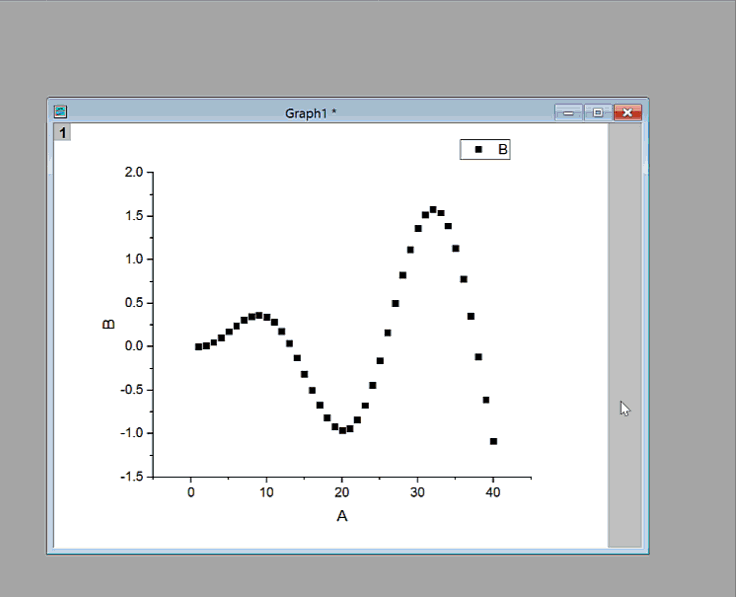
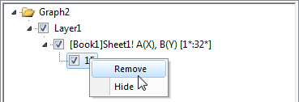
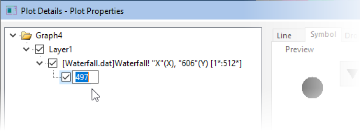

FAQ-191 Wie passe ich einen einzelnen Datenpunkt im Punktdiagramm benutzerdefiniert an?
Customize-Single-Data-Point
Letztes Update: 10.03.2021
Sie können die Anzeigeeigenschaften eines einzelnen Datenpunktes verändern, sogar wenn er Teil einer Datenzeichnungsgruppe ist. Diese Punkt-für-Punkt-Steuerung ist auf Diagrammtypen wie Linie, Symbol, Linie+Symbol, Säulen/Balken und Boxbeschränkt.
Um die Anzeige eines einzelnen Datenpunkts zu verändern:
- Drücken Sie die Strg-Taste und klicken Sie einmal auf den Datenpunkt. Verwenden Sie die Minisymbolleiste oder die Symbolleistenschaltflächen Stil und Format, um den Punkt benutzerdefiniert anzupassen. Die Minisymbolleiste bietet mehr anpassbare Eigenschaften, einschließlich Hinzufügen von Beschriftungen für einen einzelnen Punkt und Modifizieren der Anzeige von Fehlerbalken.
- Drücken Sie die Strg-Taste und klicken Sie doppelt auf den Datenpunkt. Dadurch öffnet sich der Dialog Details Zeichnung und ermöglicht Ihnen das Modifizieren aller Eigenschaften dieses besonderen Punkts.
- Drücken Sie die Strg-Taste und klicken Sie einmal auf den Datenpunkt. Klicken Sie dann mit der rechten Maustaste und wählen Sie Punkt bearbeiten im Kontextmenü. Der Dialog Details Zeichnung wird für diesen speziellen Datenpunkt aufgerufen.
Die folgende Grafik zeigt das Bearbeiten von Punkteigenschaften mit Hilfe des Dialogs Details Zeichnung:
- 
Um einen existierenden speziellen Punkt zu entfernen,
öffnen Sie den Dialog Details Zeichnung. Klicken Sie mit der rechten Maustaste auf den Datenpunkt im linken Bedienfeld und wählen Sie Entfernen im Kontextmenü.
- 
 |
Ab Origin 2018 können Sie automatisch spezielle Punkte zur Diagrammlegende hinzufügen, indem Sie die Tastenkombination Strg+L verwenden oder mit der rechten Maustaste auf die Legende klicken und Legende: Legende rekonstruieren auswählen.
|
|
Das Hinzufügen eines speziellen Punkts am Anfang oder Ende eines Diagramms ist nicht immer einfach, zum Beispiel bei einem Liniendiagramm aus vielen Datenpunkten. Es ist jedoch eine einfache, kinderleichte Methode:
- Wählen Sie einen speziellen Punkt irgendwo auf der Zeichnung. Klicken Sie dann doppelt auf den Punkt, um den Dialog Details Zeichnung zu öffnen.
- Klicken Sie im linken Bedienfeld von Details Zeichnung In the einmal auf die Indexzahl des Punktes und warten Sie, bis die Indexzahl bearbeitbar wird.
- 
- Um den speziellen Punkt zum ersten Punkt in der Zeichnung hinzuzufügen, geben Sie Begin ein; um ihn zum letzten Punkt hinzuzufügen, geben Sie End ein. Wenn Sie die Indexzahl des ersten und letzten Punktes kennen, können Sie diese stattdessen eingeben.
- Klicken Sie außerhalb des Bearbeitungsfelds. Passen Sie den speziellen Punkt weiter nach Bedarf an und klicken Sie dann auf Anwenden oder OK, um Details Zeichnung zu schließen. Der spezielle Punkt wird zum Anfang oder Ende Ihrer Zeichnung hinzugefügt.
|
Schlüsselwörter:einzelner Datenpunkt, Symbol, Punkt, markieren, Punkt löschen, speziellen Punkt entfernen